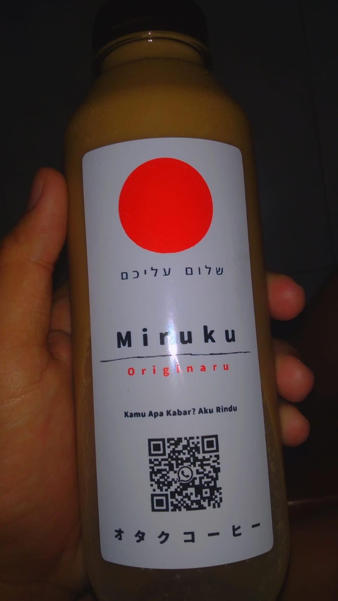

Ini Seblak dan Minuman Favorit Saya

11
Mei
Seblak cimin dumpling
Seblak adalah salah satu makanan khas Sunda tepatnya Bandung yang kini populer di kalangan luas.Dengan isian toping: aci'mie'kerupuk,cabai,bakso,dumpling,dan seafood lainnya. Makanan yang identik bercita rasa gurih pedas dengan rempah kencur itu kini bisa dengan mudah dicari dan dibuat.
Baca Selengkapnya

16